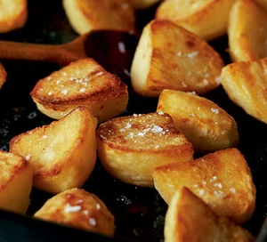

Roast Potatoes

Description:
These crispy on the outside and fluffy on the inside roast potatoes are perfect for a sunday roast, and are sure to delight friends and family.
Ingredients:
- 1kg Maris Piper potatoes
- 100g goose fat or 6tbsp olive oil
- 2 tsp flour
- sea salt flakes, to serve
Steps:
- Put a roasting tin in the oven and heat the oven to 200/fan 108c/gas 6.
- Peel the potatoes and cut each into 4 even-sized pieces or 2-3 if smaller.
- To a large pout add salt, potatoes and enough water to cover, and bring to a boil.
- Once boiling lower the and simmer for 2 minutes.
- While the potatoes are simmering add the goose fat or olive or to the roasting and let it heat for a few minutes.
- Once the potatoes have simmered, drain away all the water and toss them in the pot to fluff them up.
- Add the flour and toss again.
- Now add the potatoes to the roasting tin and coat them with the hot goose fat or olive oil.
- Put the potatoes in the oven and roast for 15 minutes, then take them out and turn them over. Repeat this 2 more times or until golden and crisp.
- Once cooked remove them from the oven, scatter with sea salt flakes and serve.